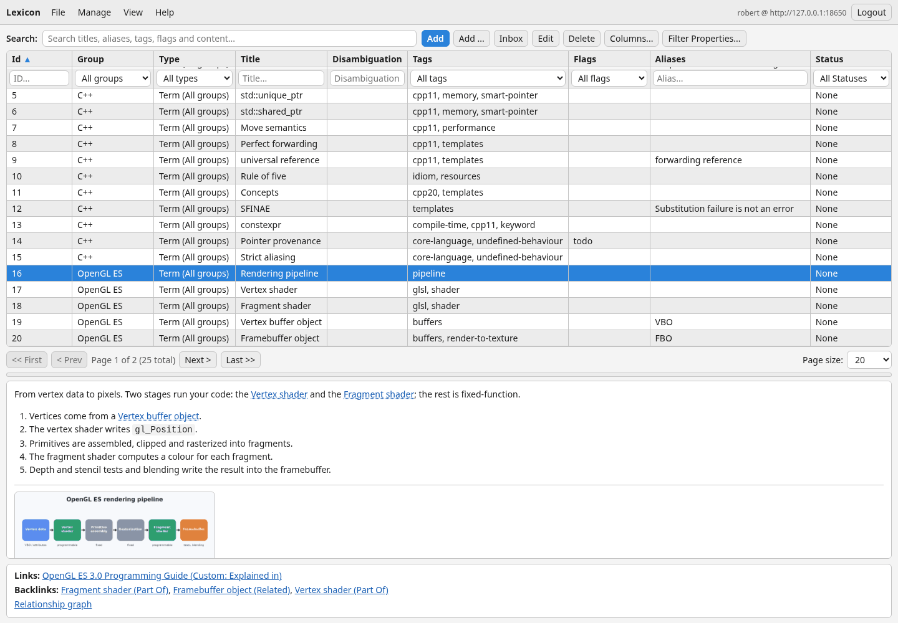
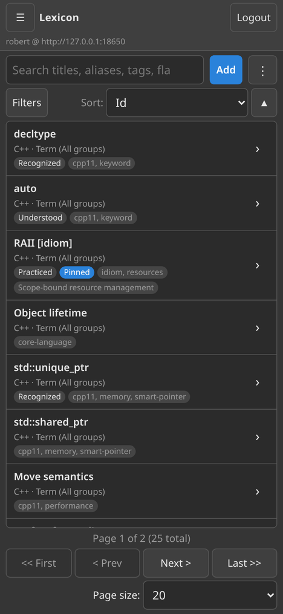
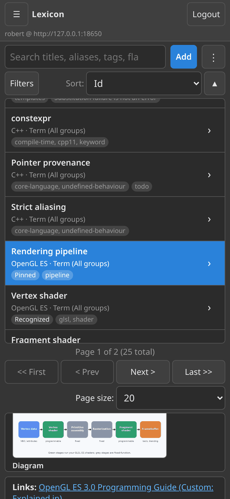
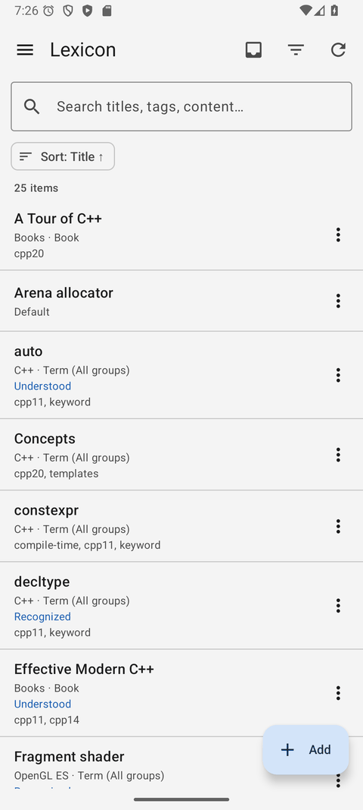
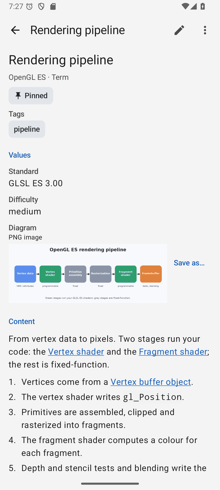
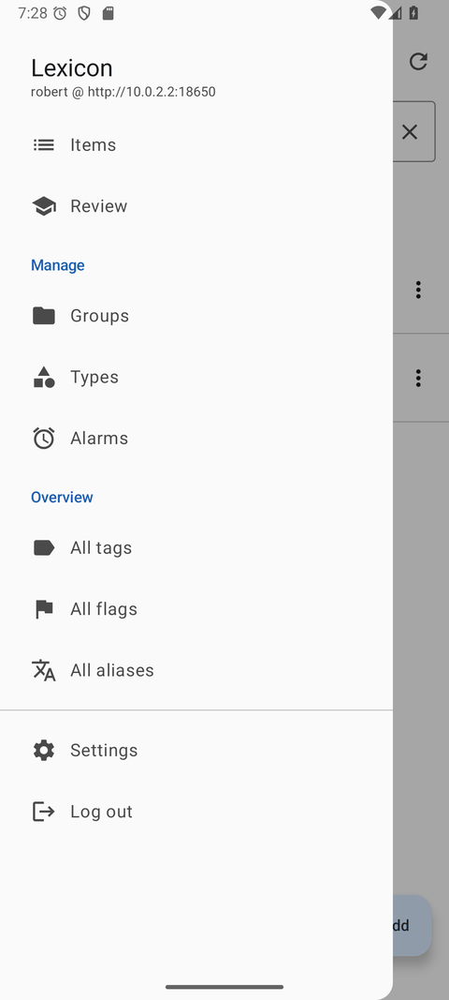

Server, web & Android
The desktop client opens the SQLite file directly. Run LexiconServer next to that same file and the dictionary is also available in a browser and on your phone — the same items, the same reviews, the same alarms.

1. Run the server
Build LexiconServer as described in Installation (it needs no Qt), create the single user it serves, and start it:
LexiconServer auth set-user --database ~/lexicon/lexicon.db
LexiconServer --database ~/lexicon/lexicon.db \
--allowed-origin http://127.0.0.1:8080 \
--backup-dir ~/lexicon-backupsIt listens on 127.0.0.1:8628 by default and answers REST calls under /api/v1. A browser client served from another address needs that address as an --allowed-origin; without one it is refused on purpose. --backup-dir turns on automatic backups.
Off the loopback, use HTTPS Put a reverse proxy (nginx, Caddy, Apache) with a certificate in front of the server, or give it --tls-cert and --tls-key. The full list of options is in docs/server.md.
2. The web client in a browser
lexicon-web/ is static content — HTML, CSS and JavaScript with no build step. Serve the directory with any web server, open it, and sign in with the server's address, your user name and your password.
It does everything the desktop client does: search and filters, the item editor with its tabs, Markdown with a live preview, images, links and the relationship graph, review, alarms and the Inbox, export and import. On a narrow screen it turns into a phone layout, and View → Light mode or Dark mode switches its theme.


3. The Android app
The native app (Kotlin and Jetpack Compose) is built from lexicon-android/ with Gradle and installed as an APK. On first start it asks for the server address, a user name and a password; after that the dictionary is a tap away.
- Items list with server-side search, filters and sorting, and the item page with its values, images and rendered Markdown.
- The editor with the same tabs, including image values.
- Review, alarms that ring even when the app is closed, and the Inbox that also works offline.
- The relationship graph, with pinch to zoom and a full-screen mode.



Working on the same dictionary
- One database. The desktop client and the server open the same SQLite file; the web client and the Android app hold no data of their own.
- No lost edits. Every item carries a revision. If another client saved an item after you opened it, your save is refused with a list of what differs and the choice to Overwrite, Reload, or keep editing.
- Sessions survive a restart of the server, so an upgrade does not sign your phone out.
Start at home Run the server on the machine that holds the dictionary and reach it over your own network or a VPN. That is the smallest setup that gives you the phone and the browser without exposing anything to the internet.